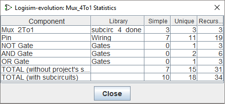

The Project menu
- Add Circuit...
-
Adds a new circuit into the current project. Logisim will insist that you name the new circuit. The name must not match any existing circuits in the project.
- New VHDL Entity...
-
Adds a new VHDL entity to the project and opens it in the HDL editor. See VHDL Entity.
- Import VHDL Entity...
-
Adds a VHDL entity read from a
.vhdfile to the project. - New Verilog Module...
-
Adds a new Verilog module to the project and opens it in the HDL editor. Verilog modules are used for FPGA generation in Verilog; Logisim does not simulate them. See Verilog Modules.
- Import Verilog Module...
-
Adds a Verilog module read from a
.vfile that contains one ANSI-style module to the project. - Load Library
-
Loads a library into the project. You can load three types of libraries, as explained elsewhere in the User's Guide.
- Unload Libraries...
-
Unloads current libraries from the project. Logisim will not permit you to unload any libraries currently being used, including libraries containing components appearing in any project circuits, as well as those with tools that appear in the toolbar or that are mapped to the mouse.
- Move Circuit Up
-
Moves the currently displayed circuit one step up the list of circuits within the project, as displayed in the explorer pane.
- Move Circuit Down
-
Moves the currently displayed circuit one step down the list of circuits within the project, as displayed in the explorer pane.
- Set As Main Circuit
-
Sets the currently displayed circuit to be the project's main circuit. This menu item will be grayed out if the current circuit is already the project's main circuit. The only significance of the main circuit is that it is the circuit that first appears when a project file is opened.
- Remove Circuit
-
Removes the currently displayed circuit from the project. Logisim will prevent you from removing circuits that are used as subcircuits, and it will prevent you from removing the final circuit in a project.
- Revert To Default Appearance
-
If you've edited the circuit's appearance, this menu item reverts the appearance back to the default. The menu item is enabled only when editing the circuit's appearance. The appearance of the default appearance can be changed by the Use new box layout property of the library.
- Edit Circuit Layout
-
Switches to allow you to edit the layout of components, which determines how the circuit works. This menu item is usually disabled since you will usually be editing the layout anyway.
- Edit Circuit Appearance
-
Switches to allow you to edit how the circuit will be represented when it is used as a subcircuit within another circuit. But this menu option allows you to draw a different appearance for the subcircuit.
- Analyze Circuit
-
Note: This menu is disabled by default in the current version of logisim-evolution. It can be reactivated by command line options.
Computes a truth table and Boolean expressions corresponding to the current circuit, displaying them in the Combinational Analysis window. The analysis process will only be valid for combinational circuits. A full description of the analysis process is described in the Combinational Analysis section. - Get Circuit Statistics
-
Shows a dialog containing statistics about components used by the currently viewed circuit. The dialog includes a table with five columns:

- Component: The name of the component.
- Library: The name of the library from which the component came.
- Simple: The number of times that component appears directly within the viewed circuit.
- Unique: The number of times that component appears in the circuit's hierarchy, where each subcircuit within the hierarchy is counted only once.
- Recursive: The number of times that component appears in the circuit's hierarchy, where we count each subcircuit as many times as it appears in the hierarchy.
The distinction between "Unique" and "Recursive" is easiest to explain by considering the 4:1 multiplexer built using three 2:1 multiplexers as in the Using subcircuits section. The 2:1 multiplexer contains two AND gates (and the 4:1 circuit includes none), so the "Unique" count of AND gates would be 2; but if you were to build the 4:1 multiplexer using this diagram, you would actually need 2 AND gates for each of the three 2:1 multiplexers, so the "Recursive" count is 6.
If you are using circuits from a loaded Logisim library, those components are considered to be
black boxes
: The contents of the library's circuits are not included in the unique and recursive counts. - Lock Circuit
-
Locks the circuit on screen against accidental edits, or unlocks it when it is ticked. Nothing in a locked circuit can be added, removed, moved or changed, though its inputs can still be poked. See Locking circuits and components; anyone can unlock, so this is a guard against slips rather than a security feature.
- Lock Selected Components
-
Locks the selected components, or unlocks them when they are all locked already. A locked component cannot be moved, deleted, rotated or have its properties changed.
- Options...
-
Opens the Project Options window.
Next: The Simulate menu.